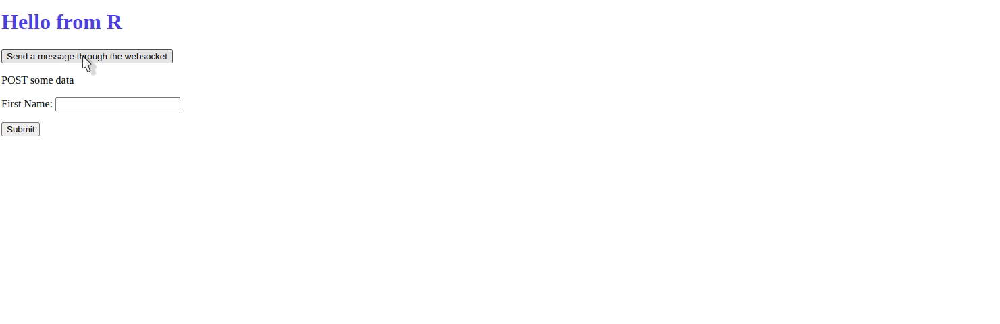

Websocket
Websockets allow for bi-directional communication between the client and the server. ie. sending messages from the client to the server and vice versa, without the need to refresh the page or constantly poll for updates.
Websockets are ideal for real-time features like live notifications, chat apps, collaborative tools, etc.
You can listen to incoming messages with the receive method which takes:
- the
nameof the message to handle and - a
handlerfunction to run when a message withnameis received. The callback function must accept the message as first argument and optionally the websocket connection object (ws), which can be used to send a response back to the client.
Below is a handler listening to the message hello, prints the message and uses the websocket to send a response.
hello_ws_handler <- function(msg, ws) {
print(msg)
ws$send(
name = "hello",
message = "Hello back! (sent from R)"
)
}
# listen to incoming messages
app$receive(name = "hello", handler = hello_ws_handler)R
Let’s walk through a complete example to demonstrate a websocket server built with Ambiorix, and a websocket client using the {websocket} package.
Server-side (Ambiorix)
library(ambiorix)
home_get <- function(req, res) {
res$send("Websockets in Ambiorix.")
}
greeting_ws_handler <- function(msg, ws) {
print(msg)
response <- paste(
as.character(Sys.time()),
"Hello! Message well received."
)
ws$send(name = "greeting", message = response)
}
app <- Ambiorix$new(port = 8080L)
app$get("/", home_get)
app$receive(name = "greeting", handler = greeting_ws_handler)
app$start()Client-side (R)
client <- websocket::WebSocket$new("ws://127.0.0.1:8080", autoConnect = FALSE)
client$onOpen(function(event) {
cat("Connection opened\n")
msg <- list(
isAmbiorix = TRUE, # __MUST__ be set!
name = "greeting",
message = "Hello from the client!"
)
# serialise:
msg <- yyjsonr::write_json_str(msg, auto_unbox = TRUE)
client$send(msg)
})
client$onMessage(function(event) {
cat("Received message from server:", event$data, "\n")
})
client$connect()Note:
- The
isAmbiorixfield is required so that Ambiorix treats it as a valid websocket message. - Messages are sent as JSON strings.
{yyjsonr}is used here for fast JSON serialization.
JavaScript
Messages sent from the server can be handled client-side with the JavaScript websocket library or using the Ambiorix class.
When setting up a project with create_package() an ambiorix.js file is placed in the static directory, this contains a class that will allow receiving and sending messages through the websocket.
It provides a static method to send messages through the websocket, like other methods in R it accepts:
- the
nameof the message and, - the
messageitself.
Ambiorix.send('hello', 'Hello from the client')One can also instantiate the class to add handlers with receive method then run start to have the handlers actually listen to incoming messages.
var wss = new Ambiorix();
wss.receive("hello", (msg) => {
alert(msg);
});
wss.start();The Ambiorix object has two classes, send which is static and thus can be used without instantiating the class.
Ambiorix.send('messageName', 'Sent from the client')And receive, a method to add listeners, very much like the receive method in R, this also takes the name of the message as first argument and the callback function as second argument.
var wss = new Ambiorix();
wss.receive("hello", (msg) => {
alert(msg);
});This must then be “started,” this actually attaches the event listeners created with receive.
wss.start()Example
Here we put in practice all that was explained in the previous sections. This example simply sends a message from the client to the server at the click of a button, this message is then printed by the server which responds with another message that shows an alert.
<!-- templates/home.html -->
<!DOCTYPE html>
<html lang="en">
<head>
<meta charset="UTF-8">
<meta name="viewport" content="width=device-width, initial-scale=1.0">
<link rel="stylesheet" href="/static/style.css">
<script src="/static/ambiorix.js"></script>
<script>
var wss = new Ambiorix();
wss.receive("hello", (msg) => {
alert(msg);
});
wss.start();
</script>
<title>Ambiorix</title>
</head>
<body>
<h1 class="brand">Websocket example</h1>
<button onclick="Ambiorix.send('hello', 'Hi from the client')">Send a message</button>
</body>
</html>Below we use receive to pass a callback function that receives the message and sends a response (that triggers the alert).
library(ambiorix)
app <- Ambiorix$new()
# homepage
app$get("/", function(req, res){
res$send_file("home.html")
})
# socket
app$receive("hello", function(msg, ws){
print(msg)
ws$send("hello", "Hello back! (sent from R)")
})
app$start()
Bypass Ambiorix
The above made use of ambiorix’s convenience, if you wish to bypass it you can specify your own handler function which must accept the websocket.
app$websocket <- function(ws){
ws$onMessage(function(binary, message){
cat("Received a message:", message, "\n")
})
}Example apps
Example apps built using websockets in Ambiorix:
Both apps broadcast messages to all connected clients.